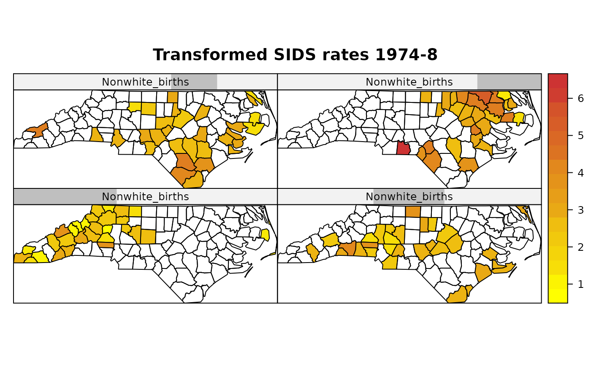

CCmaps.RdConditioned choropleth maps permit the conditioning of a map of a variable on the values of one or two other variables coded as factors or shingles. This function uses spplot after constructing multiple subsets of the variable of interest defined by the intervals given by the conditioning variables.
CCmaps(obj, zcol = NULL, cvar = NULL, cvar.names = NULL, ..., names.attr, scales = list(draw = FALSE), xlab = NULL, ylab = NULL, aspect = mapasp(obj, xlim, ylim), sp.layout = NULL, xlim = bbox(obj)[1, ], ylim = bbox(obj)[2, ])
| obj | object of class SpatialPolygonsDataFrame |
|---|---|
| zcol | single variable name as string |
| cvar | a list of one or two conditioning variables, which should be of class factor or shingle |
| cvar.names | names for conditioning variables, if not given, the names of the variables in the |
| … | |
| names.attr | names to use in panel, if different from zcol names |
| scales | scales argument to be passed to Lattice plots; use
|
| xlab | label for x-axis |
| ylab | label for y-axis |
| aspect | aspect ratio for spatial axes; defaults to "iso" (one unit on the x-axis equals one unit on the y-axis) but may be set to more suitable values if the data are e.g. if coordinates are latitude/longitude |
| sp.layout | NULL or list; see spplot |
| xlim | numeric; x-axis limits |
| ylim | numeric; y-axis limits |
The function returns a SpatialPolygonsDataFrame object with the zcol variable and the partitions of the cvars list variables invisibly.
Carr D, Wallin J, Carr D (2000) Two new templates for epidemiology applications: linked micromap plots and conditioned choropleth maps. Statistics in Medicine 19(17-18): 2521-2538 Carr D, White D, MacEachren A (2005) Conditioned choropleth maps and hypothesis generation. Annals of the Association of American Geographers 95(1): 32-53 Friendly M (2007) A.-M. Guerry's Moral Statistics of France: challenges for multivariable spatial analysis. Statistical Science 22(3): 368-399
nc.sids <- readShapeSpatial(system.file("shapes/sids.shp", package="maptools")[1], IDvar="FIPSNO", proj4string=CRS("+proj=longlat +ellps=clrk66"))#> Warning: readShapeSpatial is deprecated; use rgdal::readOGR or sf::st_read#> Warning: readShapePoly is deprecated; use rgdal::readOGR or sf::st_readnc.sids$ft.SID74 <- sqrt(1000)*(sqrt(nc.sids$SID74/nc.sids$BIR74) + sqrt((nc.sids$SID74+1)/nc.sids$BIR74)) nc.sids$ft.NWBIR74 <- sqrt(1000)*(sqrt(nc.sids$NWBIR74/nc.sids$BIR74) + sqrt((nc.sids$NWBIR74+1)/nc.sids$BIR74)) library(lattice) sh_nw4 <- equal.count(nc.sids$ft.NWBIR74, number=4, overlap=1/5) CCmaps(nc.sids, "ft.SID74", list("Nonwhite_births"=sh_nw4), col.regions=colorRampPalette(c("yellow1", "brown3"))(20), main="Transformed SIDS rates 1974-8")